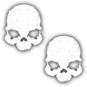
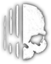

| Spirit | Gespenst | Phantom |
| Poltergeist | Banshee | Dschinn |
| Mare | Revenant | Shade |
| Dämon | Yurei | Oni |
| Yokai | Hantu | Goryo |
| Myling | Onryo | Die Zwillinge |
| Raiju | Obake | Der Mimik |
| Moroi | Deogen | Thaye |
Banshee
- Ein zufälliger Spieler wird als Ziel ausgewählt. Es wählt ein neues Ziel, wenn das aktuelle stirbt oder sich abmeldet.
- Beim Jagen, wenn das Ziel im Gebäude ist, jagt es nur das Ziel, während andere Spieler sicher durch den Geist gehen können. Ansonsten jagt es wie normal.
- Durchschnittliche Sanity Jagd basiert nur auf der Sanity des Zielspielers.
- Geisterereignisse sind eher die singende Art.
- Sanity Verlust von 15% statt 10% vom Zielspieler, wenn man während eines singenden Geisterereignisses mit dem Geist kollidiert, falls das Geisterereignis auf das Ziel gerichtet ist.
- Das Parabolmikrofon hat eine 33% Chance auf ein einzigartiges, klagendes Geräusch.
- Das Herumstreifen passiert oft in Richtung des Ziels.
- Er wird niemals sein Lieblingsraum wechseln.
- UV
- Geisterorb
- D.O.T.S
Dämon
- Jagd Initiierung kann manchmal bei jedem durchschnittlichen Wahnsinn passieren. Sogar bei 100%.
- Jagd Initiierung Blockierbereich von Kruzifixen wurde um 50% erhöht.
- Durchschnittliche Wahnsinnsjagd bei 70%.
- Rauchopfer Jagdverhinderung wurde von 90 Sekunden auf 60 Sekunden reduziert.
- Minimale Jagdzeit-Abkühlzeit wurde von 25 Sekunden auf 20 Sekunden reduziert.
- UV
- Geisterbuch
- Gefriertemperaturen
Deogen
- Durchschnittliche Sanity Jagd bei 40%.
- Jagdgeschwindigkeit wird um 75% erhöht, wenn mehr als 6m entfernt. Unter 6m wird der Geist viel langsamer, je näher er dem Spieler kommt.
- Beim Jagen hat er immer Sichtlinie zu allen Spielern (Verstecke funktionieren nicht) und wählt ab und zu das nächstgelegene Ziel während der Jagd neu.
- Beim Jagen ist er für kürzere Zeit unsichtbar.
- Kann ein einzigartiges, schweres bullartiges Atmen innerhalb von 1 Meter machen.
- Räucherwerk zwingen ihn dazu, das nächstgelegene Ziel neu zu wählen, wenn der Effekt abgelaufen ist.
- Geisterbox
- Geisterbuch
- D.O.T.S
Goryo
- D.O.T.S kann nur durch eine Kamera gesehen werden.
- Es wird nicht mit D.O.T.S interagieren, wenn ein Spieler im selben Raum wie der Geist ist.
- Es wird nie sein Lieblingsraum wechseln oder lange Strecken herumlaufen.
- EMF 5
- UV
- D.O.T.S
Hantu
- Beim Jagen können lebende Spieler den Atem des Geistes sehen, wenn der Strom aus ist, sogar durch eine Kamera.
- Jagdgeschwindigkeit wird höher, wenn die Temperatur in Räumen unter 15°C liegt, bis zu 60% unter 0°C.
- Jagdgeschwindigkeit wird um 20% langsamer in Räumen über 15°C.
- Jagdgeschwindigkeit wird nicht schneller, wenn der Geist einen Spieler sieht, anders als bei den meisten anderen Geistern.
- Der Strom hat eine erhöhte Chance, auszufallen.
- UV
- Geisterorb
- Gefriertemperaturen
Dschinn
- Jagdgeschwindigkeit wird um 50% erhöht, wenn der Geist in Sichtweite ist und der Spieler mehr als 3m entfernt ist, während der Strom an ist.
- Sanity Verlust von 25% ab und zu, wenn du innerhalb von 3m zum Geist stehst und der Strom an ist. Löst auch ein EMF 2 oder 5 am Stromkasten aus.
- Der Strom kann nicht durch eine Geisterinteraktion ausgemacht werden.
- EMF 5
- UV
- Gefriertemperaturen
Mare
- Durchschnittliche Sanity Jagd Schwelle mit Lichtern an liegt bei 40% und bei 60% mit Lichtern aus.
- Geisterereignisse passieren eher, wenn eine Glühbirne kaputt geht.
- Interaktionen passieren eher, wenn Lichter ausgeschaltet werden.
- Lichter können sofort wieder ausgeschaltet werden, nachdem du sie angemacht hast. Kann nicht endlos wiederholt werden.
- Lichter können nicht vom Geist eingeschaltet werden.
- Der Geist neigt eher dazu, in unbeleuchtete Räume zu gehen, und hat daher eine höhere Chance, sein Lieblingsraum zu wechseln, wenn das aktuelle Lieblingsraum beleuchtet ist.
- Geisterbox
- Geisterorb
- Geisterbuch
Der Mimik
- Geister Orbs erscheinen als viertes Beweisstück.
- Kann Eigenschaften von anderen Geistern nachahmen, einschließlich frühem Jagen.
- Wechselt alle 30 bis 120 Sekunden die Eigenschaften, die es nachahmt, aber niemals während einer Jagd.
- Geisterbox
- UV
- Gefriertemperaturen
- Geisterorb
Moroi
- Jagdgeschwindigkeit ist 10% langsamer bei über 45% durchschnittlicher Sanity, die sich allmählich auf 30% schneller bei 0% durchschnittlicher Sanity erhöht.
- Sanity Verlust: Eine Geisterbox Antwort wird den Spieler verfluchen, wodurch deren passiven Sanity-Verlust verdoppelt werden, und das Stehen in einem beleuchteten Bereich wird den Sanity-Verlust nicht stoppen/verlangsamen.
- Der Fluch pausiert, wenn man außerhalb des Hauses ist, und startet wieder, wenn man zurück im Haus ist.
- Sanity-Medikamente brechen den Fluch.
- Mehrere Spieler können gleichzeitig verflucht werden.
- Die Verwendung von Räucherwerk in der Nähe während einer Jagd wird den Geist für 50% länger desorientieren, was bedeutet, dass er noch ein paar Sekunden desorientiert bleibt, nachdem das Räucherwerk abgebrannt sind.
- Geisterbox
- Gefriertemperaturen
- Geisterbuch
Myling
- Beim Jagen können Schritte und Geistergeräusche nur innerhalb von 12m des Spielers gehört werden (gleiche Distanz wie elektronische Störungen).
- Erzeugt häufiger paranormale Geräusche durch das Parabolmikrofon.
- EMF 5
- UV
- Geisterbuch
Obake
- Beim Jagen wird es plötzlich vorübergehend die Form eines anderen Geistes annehmen. Nicht sichtbar für tote Spieler.
- Beim Erstellen von UV-Fingerabdrücken gibt es eine ~16,7% Chance, ein einzigartiges Muster zu erstellen:
- Sechsfinger-Handabdruck.
- Zwei Fingerabdrücke (statt einem) auf Lichtschaltern, Lampen und Fernbedienungen.
- Fünf Fingerabdrücke (statt vier) auf Tastaturen und Gefängniszellentüren.
- UV-Fingerabdrücke haben eine 25% Chance, nicht angezeigt zu werden.
- Die verbleibende Zeit der UV-Fingerabdrücke wird ab und zu auf die Hälfte gekürzt. Das kann mehrfach hintereinander passieren, sodass Fingerabdrücke nur für wenige Sekunden sichtbar sind.
- EMF 5
- UV
- Geisterorb
Oni
- Beim Jagen wird der Geist länger sichtbar blinken, was es einfacher macht, ein Foto zu machen.
- Geisterereignisse werden niemals Geisternebel oder Luftballons sein.
- Geisterereignisse bevorzugen eine vollständige Manifestation statt schattiger oder durchsichtiger Erscheinungen.
- Sanity Verlust von 20% statt 10%, wenn man während eines Geisterereignisses mit dem Zielspieler kollidiert.
- Interaktionen passieren häufiger, wenn Spieler in der Nähe sind.
- EMF 5
- Gefriertemperaturen
- D.O.T.S
Onryo
- Jagd-Start kann nicht passieren, wenn der Geist innerhalb von 4m von einer angezündeten Kerze, einem Feuerzeug oder einem Lagerfeuer ist.
- Jagd-Start wird es bevorzugen, angezündete Kerzen, Feuerzeuge und Lagerfeuer auszupusten, bevor es ein Kreuz verbrennt.
- Jagd-Start wird bei jedem dritten Auspusten einer angezündeten Kerze, eines Feuerzeugs oder eines Lagerfeuers ausgelöst. Diese Jagd kann immer noch durch eine zusätzliche nahe Flamme oder ein Kreuz blockiert werden.
- Durchschnittliche Sanity Jagd bei 60%.
- Bläst angezündete Kerzen, Feuerzeuge und Lagerfeuer häufiger aus. Steigt weiter mit der Anzahl der toten Spieler. Macht gerne die Glühbirne kaputt.
- Geisterbox
- Geisterorb
- Gefriertemperaturen
Phantom
- Beim Jagen ist der Geist doppelt so lange unsichtbar.
- Sanity Verlust von 0,5%/Sekunde tritt auf, wenn man sich innerhalb von 10m des Geistes in Sichtweite während eines Geisterereignisses oder einer Jagd befindet.
- Wenn der Geist während eines Geisterereignisses fotografiert wird, wird er für den Rest des Ereignisses unsichtbar, während der Audio weiterläuft.
- Geisterbilder im Journal zeigen den Geist nicht auf dem Bild und enthalten keine Störung.
- Kann einen zufälligen Spieler im Haus auswählen und zu ihm gehen, egal wie weit er entfernt ist, was eine EMF 2-Messung am Standort des Spielers erzeugt.
- Geisterbox
- UV
- D.O.T.S
Poltergeist
- Beim Jagen wird der Geist nahegelegene Objekte doppelt so häufig werfen.
- Interaktionen können mehrere Objekte gleichzeitig werfen.
- Interaktionen können ein Objekt mit doppelt so viel Kraft werfen.
- Sanity Verlust von 2% für jedes geworfene Objekt für alle nahen Spieler, wenn mehrere Objekte gleichzeitig geworfen werden.
- Der Aktivitätsmonitor kann wie ein EMF 5-Peak aussehen (von 0 auf 5 Balken springen und dann wieder abfallen), wenn mehrere Objekte gleichzeitig geworfen werden.
- Geisterbox
- UV
- Geisterbuch
Raiju
- Jagdgeschwindigkeit erhöht sich um 50%, wenn man sich in der Nähe von aktivem elektrischen Gerät befindet.
- Durchschnittliche Sanity Jagd erhöht sich von 50% auf 65%, wenn aktives elektrisches Gerät in der Nähe ist.
- Beeinträchtigt Elektronik bis zu 15m (statt 10m) entfernt auf derselben Etage während Jagden und Geisterereignissen.
- EMF 5
- Geisterorb
- D.O.T.S
Revenant
- Jagdgeschwindigkeit erhöht sich sofort um 75%, wenn der Geist einen Spieler jagt oder sich auf dessen zuletzt bekannten Standort zubewegt, egal ob er den Spieler gesehen oder gehört hat, oder aktive Elektronik in der Nähe spürt.
- Jagdgeschwindigkeit verringert sich um 40%, wenn der Geist umherirrt.
- Jagdgeschwindigkeit verlangsamt sich über 2,7 Sekunden, wenn der Geist zur Umherwanderung zurückkehrt.
- Geisterorb
- Geisterbuch
- Gefriertemperaturen
Shade
- Jagdstart kann nicht stattfinden, wenn ein Spieler im gleichen Raum wie der Geist ist.
- Durchschnittliche Sanity Jagd bei 35%.
- Geisterereignisse hängen von der durchschnittlichen Sanity ab. Die Chance startet bei 0% bei 100% Sanity und steigt langsam auf 100% bei 50% Sanity.
- Geisterereignisse sind wahrscheinlich Geisternebel/luftball (akustische mit Atem, Zischen oder Rauschen).
- Geisterereignisse, bei denen der Geist erscheint, sind wahrscheinlich eine schattenhafte Gestalt.
- Keine Interaktionen, wenn ein Spieler im gleichen Raum wie der Geist ist.
- Wenn der Geist mit einem Beschwörungskreis, einer Musikbox oder einer Affenpfote herbeigerufen wird, besteht eine Chance, dass er als schwarzer Schatten erscheint, anstatt in seiner vollen Gestalt.
- EMF 5
- Geisterbuch
- Gefriertemperaturen
Spirit
- Weihrauch Jagdverhinderung wird von 90 Sekunden auf 180 Sekunden erhöht.
- Beachte, dass wie gewohnt die Verwendung von Weihrauch den Timer nicht zurücksetzt.
- EMF 5
- Geisterbox
- Geisterbuch
Thaye
- Durchschnittliche Sanity Jagd startet bei 75%. Sinkt jedes Mal, wenn der Geist älter wird, bis auf 15%.
- Jagdgeschwindigkeit wird zu Beginn um 60% erhöht. Sinkt jedes Mal, wenn der Geist älter wird, bis auf ein Drittel der ursprünglichen Geschwindigkeit (langsamer als die Spieler).
- Jagdgeschwindigkeit beschleunigt sich nicht, wenn der Geist einen Spieler in Sicht hat, anders als bei den meisten Geistern.
- Interaktionen und Geisterereignisse passieren zu Beginn sehr häufig. Sinkt jedes Mal, wenn der Geist älter wird, bis auf ein Viertel der ursprünglichen Häufigkeit.
- Altert nur, wenn ein Spieler im gleichen Raum wie der Geist ist.
- Die Antwort auf das Fragen nach dem Alter auf dem Ouija-Brett wird sich ebenfalls ändern.
- Geisterorb
- Geisterbuch
- D.O.T.S
Die Zwillinge
- Jagdstart kann an dem Ort stattfinden, an dem sich gerade eines der Zwillinge befindet. Das schlie√üt den Beschwörungskreis ein.
- Jagdstart blockiert die Kreuzige je nach dem Standort des Hauptzwillings, egal welcher Zwilling die Jagd startet.
- Jagdgeschwindigkeit wird um 10% erhöht oder verringert, je nachdem, welcher Zwilling jagt. Der alt-Zwilling ist der schnelle.
- Interaktionen können in zwei verschiedenen Bereichen des Hauses nahezu gleichzeitig stattfinden.
- Der Aktivitätsmonitor zeigt zunächst einen Anstieg, dann eine Nivellierung, gefolgt von einem sofortigen Spike, was auf eine doppelte Interaktion hinweist.
- Beweise werden nur vom alt-Zwilling verfügbar sein, außer EMF 5.
- EMF 5
- Geisterbox
- Gefriertemperaturen
Gespenst
- Wird nie in einen Salzstapel treten.
- Kann zu einem zufälligen Spieler teleportieren und ein EMF 2 Signal an dessen Standort erzeugen.
- EMF 5
- Geisterbox
- D.O.T.S
Yokai
- Bei der Jagd kann es nur Spieler oder händisch gehaltene, aktive Elektronik erkennen, die innerhalb von 2,5m Entfernung sind.
- Durchschnittliche Sanity-Jagd wird von 50% auf 80% erhöht, wenn man in der Nähe des Geistes spricht.
- Interaktionen werden erhöht, wenn man in der Nähe des Geistes spricht.
- Geisterbox
- Geisterorb
- D.O.T.S
Yurei
- Räucherstäbchen-Jagdverhinderer fängt das Geist in seinem Lieblingsraum für die gesamte Dauer (90 Sekunden).
- Viel wahrscheinlicher, dass es Türen komplett schließt, und kann Exit-Türen auf eine einzigartige Weise schließen, ohne dass es ein Geisterereignis oder eine Jagd ist.
- Verursacht einen Sanity-Verlust von 15% für nahe Spieler.
- Ein Türen-Interaktionsgeräusch wird abgespielt (manchmal zweimal überlappend), gefolgt von einem zuschlagenden Geräusch nach etwa einer Sekunde. Wenn dieses charakteristische Geräuschmuster zu hören ist, ist es sehr wahrscheinlich, dass es ein Yurei ist.
- Geisterorb
- Gefriertemperaturen
- D.O.T.S